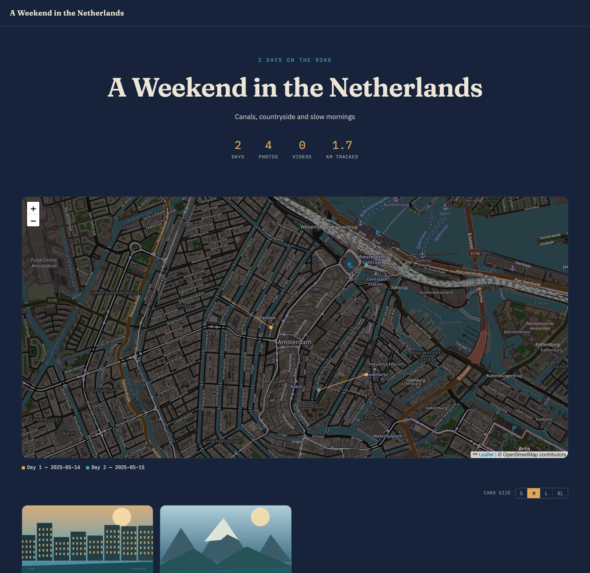
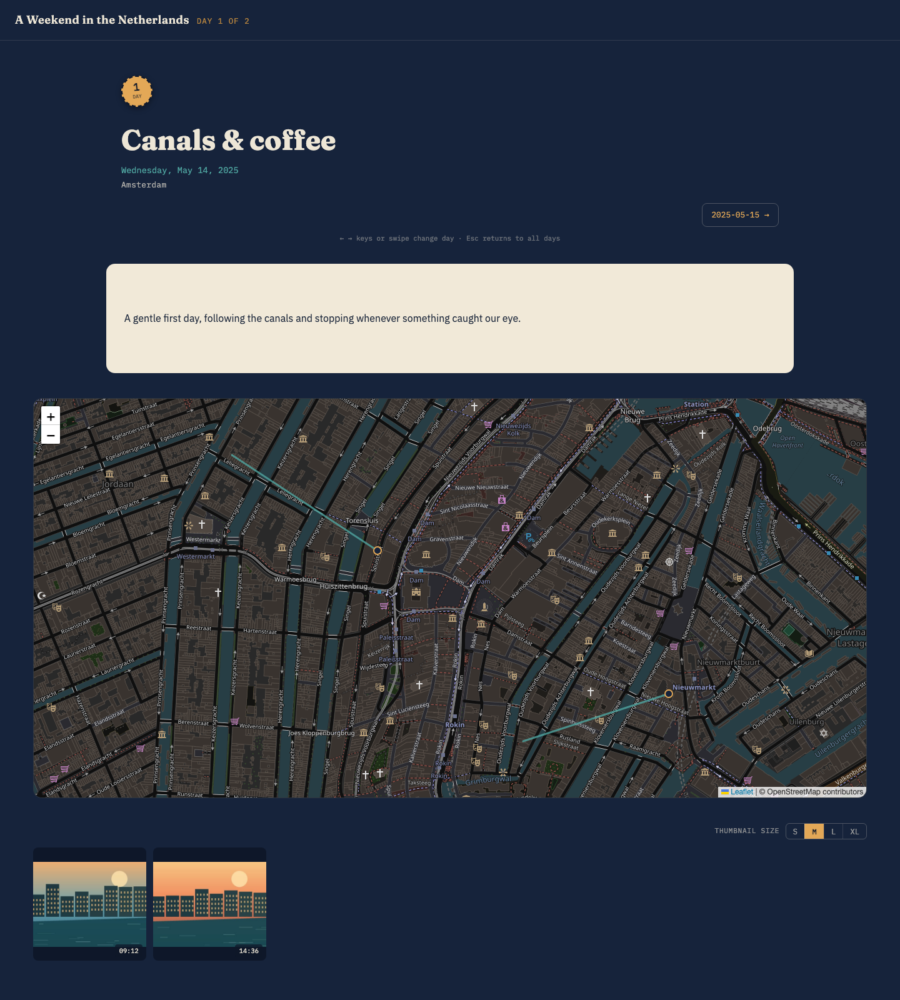
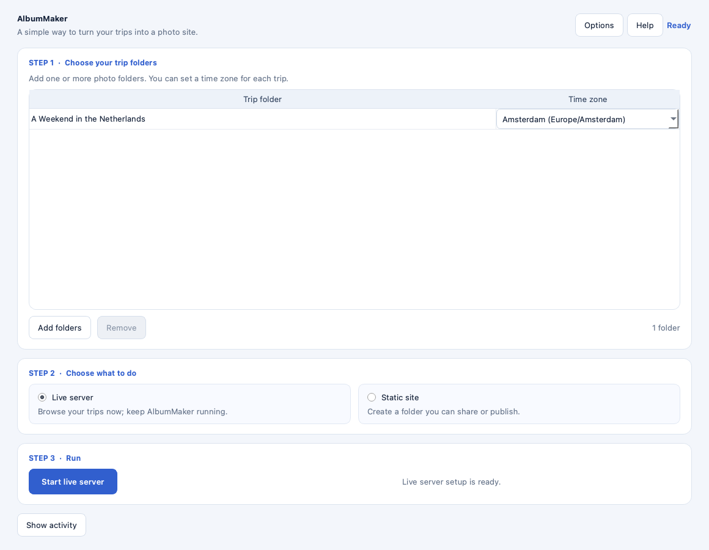

Choose your trip folders
Add one folder or a whole library. Pick a time zone for each trip when needed.
Turn a folder of photos, videos and a GPS track into a beautiful, day-by-day travel story. Explore it on your computer, then share a self-contained website.
MIT-licensed source. No account or cloud upload required. Current build downloads are temporary GitHub Actions artifacts, retained for 30 days.

AlbumMaker organizes media by capture date, adds locations from photo metadata or a GPX track, and gives each day a map, gallery and slideshow.

Add one folder or a whole library. Pick a time zone for each trip when needed.
Use the live server to add titles and captions, mark favorites, hide photos and select covers.
Build a static site to copy, publish or keep offline. Hidden photos are left out of the build.
It is a real AlbumMaker site built from a small sample trip.
The sample photos are original generated illustrations, not photographs of a real trip. The route and trip details are fictional.
AlbumMaker processes your library locally. It does not send your photos to an AlbumMaker service. The live server listens only on your computer by default; enabling local-network access lets other devices on your network view non-hidden photos, and the server has no login. Map tiles and, when needed, offline assets come from their stated providers, so those providers can receive network requests. A static site contains copies of visible media that you choose to share.
Use the app to manage trips and run either workflow, or use the command-line tools if you prefer.

The application source is MIT-licensed. Bundled third-party components have their own licenses, including GPL-licensed FFmpeg and x265; see the third-party notices before redistributing binaries.